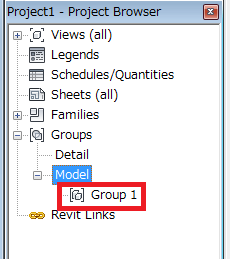

Deleting a Group
I discussed various aspects of programmatically handling Revit element groups in the past, such as how to create, rename and edit the contents of an existing group. Here is another question on the topic of groups that helps clarify the relationship between the group and its type:
Question: I am deleting a model group using the following code:
Transaction trans = new Transaction( doc ); trans.Start( "test" ); ElementSet sel = uidoc.Selection.Elements; foreach( Element e in sel ) { Group group = e as Group; if( null != group ) { doc.Delete( group ); } } trans.Commit();
This seems to delete the model group including the elements contained in it. But still the group remains visible in the project browser:

How can I delete it from the browser, please?
By the way, I see the same behaviour when I delete it using the Delete button in the user interface
Answer: If you want to delete the definition of the group, then the GroupType also needs to be deleted, for example as follows:
FilteredElementCollector collector = new FilteredElementCollector( doc ) .OfClass( ( typeof( GroupType ) ) ); var groupTypes = from element in collector where element.Name == "Group 1" select element; Element groupType = groupTypes.First(); doc.Delete( groupType );
You can also access the group type directly and more easily from the group itself using the Group.GroupType property.
Response: Thank you, it does indeed remove the group from the browser.